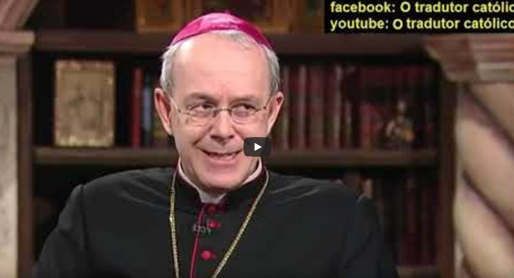
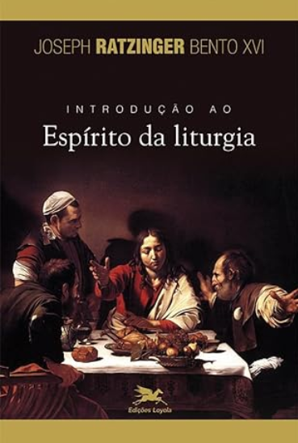
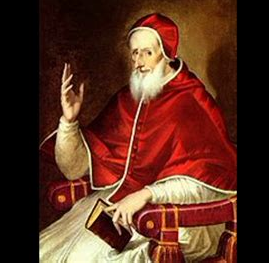
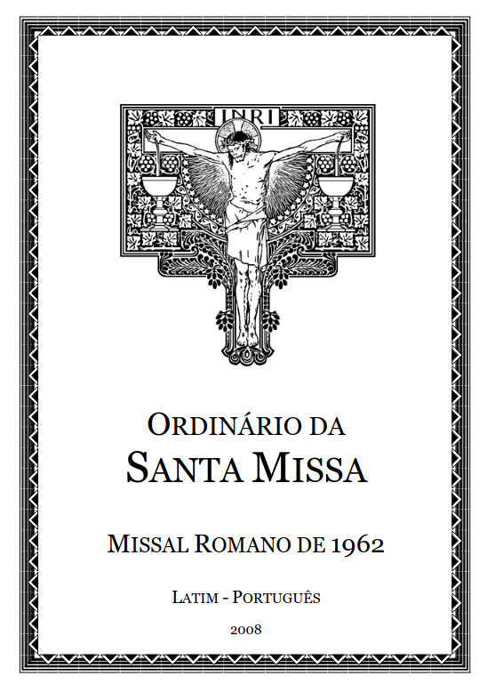
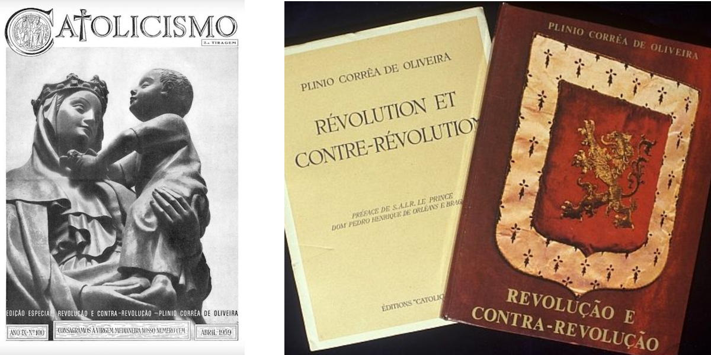
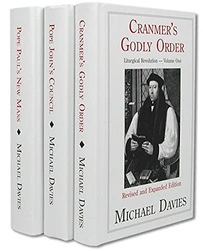
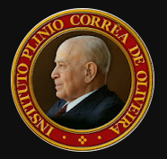
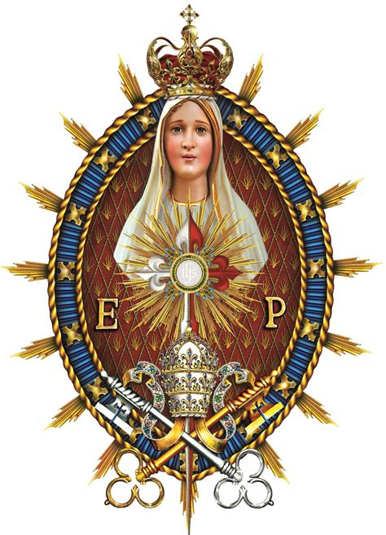

Confissões do Inferno, Pe Exorcista Gabriele Amorth
Quatro consequências GRAVÍSSIMAS da comunhão na mão - Dom Athanasius Schneider
A origem da comunhão na mão - Pe Paulo Ricardo
Comunhão na Mão: o Triunfo da Desobediência - Centro Dom Bosco
O que acontece quando você comunga na mão ? - Centro Dom Bosco
Comunhão na mão = Jesus Cristo no chão!
Comunhão na Mão é um ataque diabólico à Eucaristia - Cardeal Sarah
Um Padre pode negar dar Comunhão na mão? - Dom Athanasius Schneider
Auto-comunhão: Posso comungar com as próprias mãos o Corpo e Sangue do Senhor? - Pe Paulo Ricardo
A sacrílega comunhão na mão, o desrespeito máximo com Jesus Sacramentado - Doutrina Católica
Introdução ao Espírito da Liturgia - Papa Bento XVI
O que aconteceu com a Igreja após o Concílio Vaticano II ? Pe Paulo Ricardo
Conheça, ame e defenda a Missa de Sempre! Centro Dom Bosco
Por que só a missa de sempre pode salvar a civilização ocidental ? - Prof. Alvaro Mendes
Missa De Sempre - CANONIZADA PERPETUAMENTE pelo Santo Padre na bula "QUO PRIMUM TEMPORE" Papa S. Pio V 14.07.1570
Missa De Sempre Rezada na Basílica de Aparecida - IBP
BULA "QUO PRIMUM TEMPORE", Papa S. Pio V, 14.07.1570
Ordinário do Missal da Missa de Sempre - Papa São Pio V
Qual o problema com o Missal de Paulo VI? - Pe Paulo Ricardo
Crise na Igreja Católica - a 'autodemolição' - História e Fé Católica - Missionário Lorenzo Lazzarotto
Marxismo Cultural - Pe Paulo Ricardo
Revolução e Contra-Revolução - Dr. Plínio Correia de Oliveira
Cranmer's Godly Order I, II and III - Michael Davies
Canal Instituto Dr. Plínio Correia de Oliveira
Canal Arautos do Evangelho